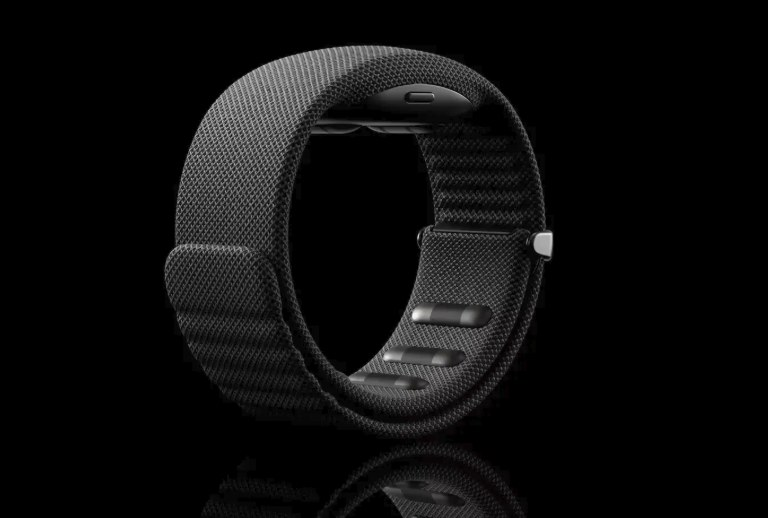
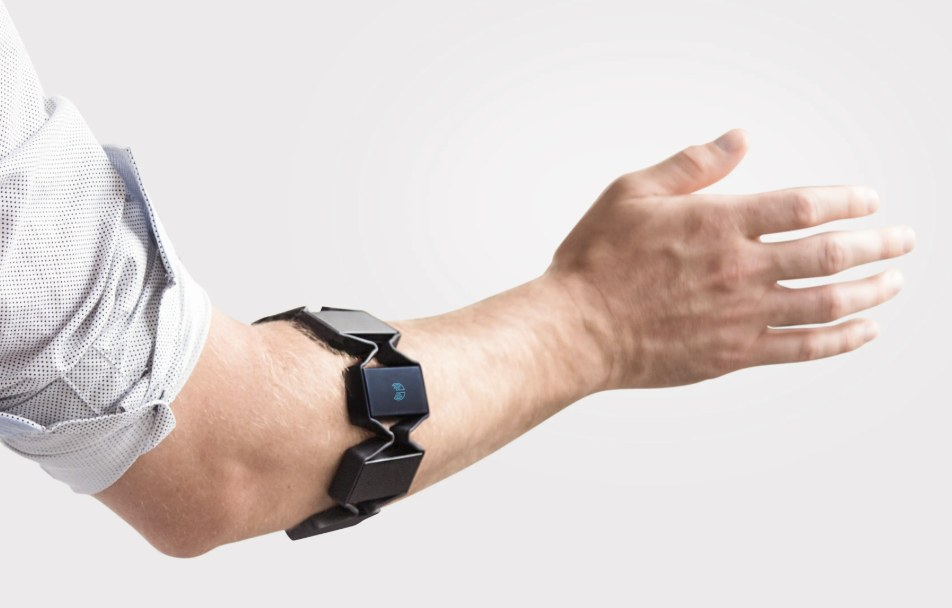
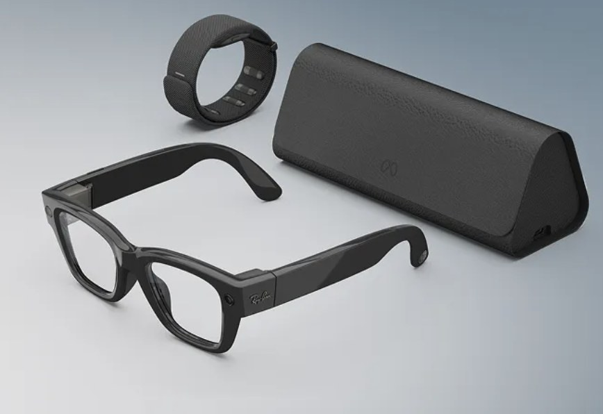

Pellizcar
Juntar pulgar e índice para seleccionar o abrir. Es el «clic».
Dispositivo de interacción · 2025
Controlar un ordenador sin tocarlo: una pulsera que lee la intención de mover los dedos.

La Meta Neural Band es una pulsera que se lleva en la muñeca y funciona como dispositivo de entrada, igual que lo son un ratón o un teclado. La diferencia es que no hay que pulsar nada: unos sensores pegados a la piel detectan la pequeña actividad eléctrica que generan los músculos del antebrazo cuando movemos (o vamos a mover) los dedos.
Un modelo de inteligencia artificial traduce esas señales en órdenes: un pellizco entre el pulgar y el índice equivale a un clic, deslizar el pulgar sobre el índice sirve para desplazarse y girar la muñeca con los dedos juntos sube o baja el volumen.
Se vende junto a las gafas Meta Ray-Ban Display, que llevan una pequeña pantalla en la lente derecha. La pulsera es la forma de manejar esa pantalla sin sacar el móvil ni tocar las gafas.
Juntar pulgar e índice para seleccionar o abrir. Es el «clic».
Moverlo sobre el dedo índice para pasar de una opción a otra.
Con los dedos juntos, como si fuera una rueda de volumen.
Trazar letras con el dedo sobre la mesa o la pierna (función añadida en 2026).
He escogido este dispositivo porque no mejora una forma de interactuar que ya existía, sino que propone una nueva. Durante décadas hemos tenido que adaptarnos nosotros a la máquina (aprender a usar el teclado, apuntar con el ratón, mirar una pantalla). Con esta pulsera es el ordenador el que se adapta a un movimiento natural de la mano. Estos son los beneficios que me parecen más importantes:
Como detecta la señal del músculo y no el movimiento visible, puede funcionar en personas que solo pueden hacer gestos muy pequeños, que tienen temblores o a las que les falta algún dedo. En la Universidad Carnegie Mellon ya se está probando con personas con lesión medular.
No hace falta sacar el móvil ni hablar en voz alta. Se puede contestar un mensaje con un gesto casi invisible, algo útil en una reunión, en el transporte público o caminando.
Junto con las gafas, permite consultar información sin bajar la cabeza hacia una pantalla. La persona sigue mirando lo que tiene delante (lo que se llama computación head-up).
Los sistemas basados en cámaras fallan con poca luz o si la mano queda tapada (por ejemplo, en el bolsillo). La pulsera lee señales eléctricas, así que no depende de la visión.
Meta entrenó el modelo con datos de casi 200.000 personas, por eso funciona nada más ponérsela, sin tener que «enseñarle» los gestos de cada usuario.
Es ligera, aguanta todo el día y resiste el agua. No es un prototipo de laboratorio, sino un producto que se puede comprar y llevar puesto.
La IPO estudia cómo diseñar sistemas que las personas puedan usar de forma eficaz, eficiente y satisfactoria. La Neural Band toca de lleno varios de los conceptos de la asignatura:
Pasamos de la manipulación directa con la mano sobre un objeto físico (ratón, pantalla táctil) a una interfaz natural, en la que el propio cuerpo es el dispositivo de entrada.
Se reduce la distancia entre lo que quiero hacer y cómo tengo que hacerlo: pellizcar para «coger» algo es un gesto que ya conocemos del mundo real. Así el golfo de ejecución es más pequeño.
Como el gesto es casi invisible, el sistema tiene que confirmar que lo ha entendido. La pulsera vibra (feedback háptico) y las gafas muestran el resultado en pantalla (feedback visual).
Los gestos imitan acciones cotidianas (pellizcar, deslizar, girar una rueda), así que encajan con el modelo mental del usuario y la curva de aprendizaje es corta.
Abre la puerta a usuarios que no pueden usar un ratón o una pantalla táctil, uno de los objetivos centrales de la IPO.
Se acerca a la idea de que la tecnología «desaparezca» y se integre en la vida diaria sin exigir toda nuestra atención.
La Neural Band no aparece de la nada. Es el último paso de una larga búsqueda de formas de comunicarnos con el ordenador que sean cada vez más naturales y nos exijan menos esfuerzo.
Douglas Engelbart crea el primer prototipo. Permite señalar en pantalla, pero exige una superficie y tener la mano encima del aparato.
El iPhone populariza tocar directamente lo que se ve. Es más intuitivo, pero obliga a sostener el dispositivo y mirarlo.
Kinect y Leap Motion reconocen el cuerpo y las manos sin tocar nada. Su punto débil es que necesitan ver la mano y buena iluminación.
Thalmic Labs lanza el primer brazalete comercial con sensores EMG. Reconocía pocos gestos y no era muy preciso. Dejó de venderse en 2018.

Facebook (hoy Meta) adquiere esta empresa de Nueva York, que investigaba pulseras capaces de leer las señales nerviosas hacia la mano. Es el origen directo de la Neural Band.
Meta enseña sus gafas de realidad aumentada experimentales, Orion, controladas ya con una pulsera EMG.
El equipo publica su investigación en la revista científica. Demuestra que el mismo modelo funciona en personas distintas sin calibrarlo, con más de un 90 % de acierto.
Sale a la venta en EE. UU. junto con las gafas Meta Ray-Ban Display.

En el CES 2026 se añade la escritura de mensajes trazando letras con el dedo sobre cualquier superficie.
| Dispositivo | Manos libres | Funciona sin ver la mano | Discreto en público | Apto para movilidad reducida |
|---|---|---|---|---|
| Ratón y teclado | No | Sí | Regular | Limitado |
| Pantalla táctil | No | No | Regular | Parcial |
| Control por voz | Sí | Sí | No | Sí |
| Gestos con cámara | Sí | No | No | Parcial |
| Brazalete Myo (2014) | Sí | Sí | Regular | Parcial |
| Meta Neural Band | Sí | Sí | Sí | Sí |
Tabla de elaboración propia a partir de la información consultada.